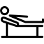
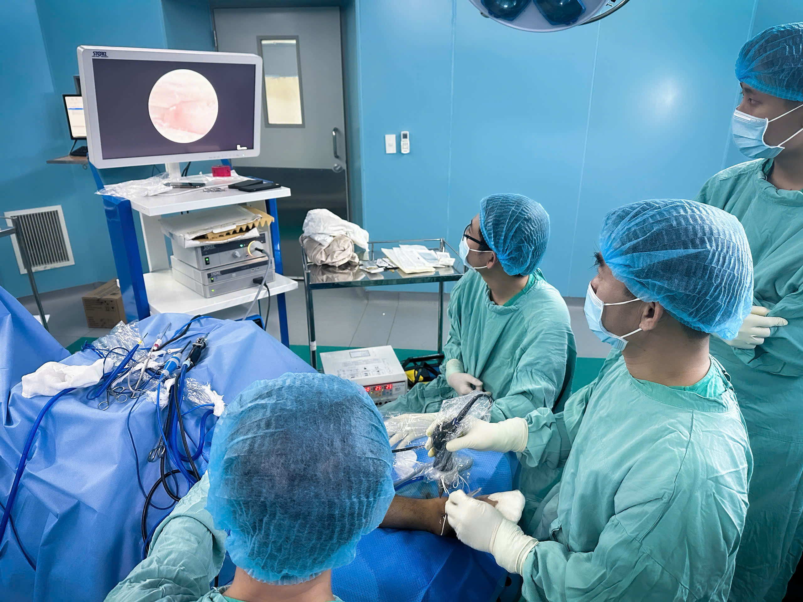
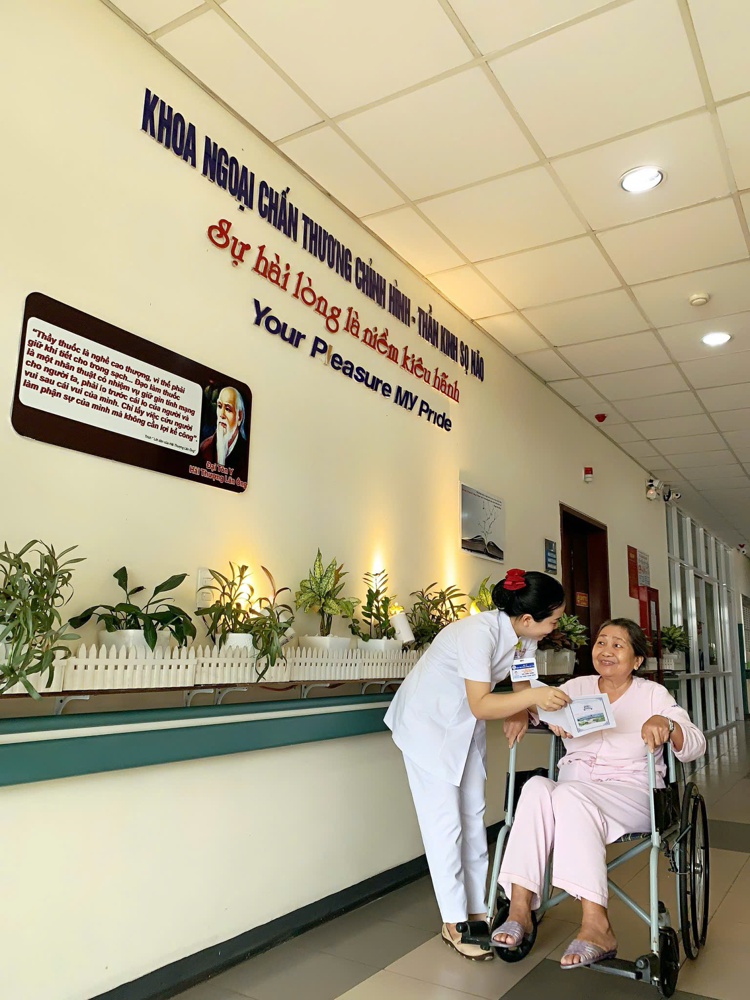

Thần Kinh Sọ Não - Bệnh viện Trung Ương Huế Cơ Sở 2
Thần Kinh Sọ Não - Bệnh viện Trung Ương Huế Cơ Sở 2
Bệnh lý cột sống là nhóm các rối loạn ảnh hưởng đến cấu trúc và chức năng của cột sống, bao gồm đốt sống, đĩa đệm, dây chằng và tủy sống. Những tình trạng này có thể gây đau, hạn chế vận động và ảnh hưởng nghiêm trọng đến đời sống.
Cột sống giúp nâng đỡ cơ thể và giữ cho chúng ta đứng, ngồi, đi lại bình thường. Khi cột sống bị tổn thương sẽ gây đau lưng dữ dội và hạn chế mọi sinh hoạt.
Đây là bệnh lý phổ biến ở người trung niên. Nguyên nhân chủ yếu do thoái hóa tự nhiên hoặc các chấn thương tích tụ theo thời gian.
⚠️ Trượt đốt sống: Đốt xương bị lệch khỏi vị trí trục chuẩn.
⚠️ Hẹp ống sống: Không gian tủy bị thu hẹp, chèn ép rễ thần kinh.

Phẫu thuật là phương pháp tối ưu khi các biện pháp bảo tồn không còn tác dụng, giúp giải phóng chèn ép và làm vững cột sống ngay lập tức.
Tiêu chuẩn vàng trong chăm sóc ngoại khoa hiện đại

KỸ THUẬT CHUYÊN SÂU
PHỐI HỢP ĐA CHUYÊN KHOA

TẬN TÂM CHĂM SÓC